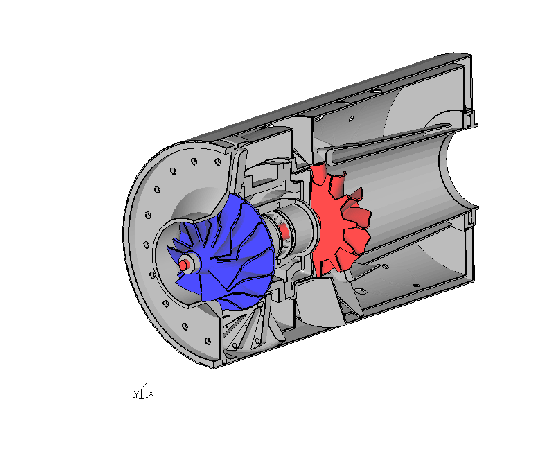

CalculiX USER'S MANUAL
- CalculiX GraphiX, Version 2.19 -
Figure 1:
A complex model made from scratch using second order brick elements
|  |
Menu
Animate
Frame
Zoom
Center
Enquire
Cut
Graph
User
Orientation
Hardcopy
Help
Toggle CommandLine
Quit
Customization
Commands
Element Types
Result Format
Pre-defined Calculations
Meshing rules
User-Functions
Known Problems
Tips and Hints
Simple Examples
Bibliography
About this document ...